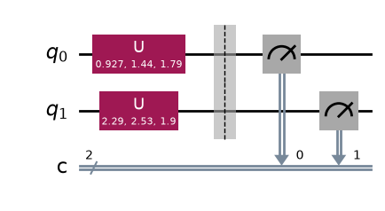
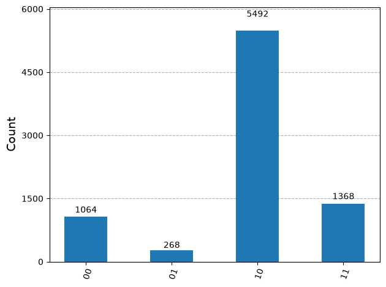

6.1. Two qubits#
6.1.1. Hilbert space and computational basis#
First, let us recall that a single qubit is in a two-dimensional Hilbert space \(\mathbb{C}^2\) and the computational basis vectors \(0\rangle\) and \(|1\rangle\) span the space. Now we consider two qubits \(q_0\) and \(q_1\). The composite system lives in a four-dimensional Hilbert space. The dimension \(4\) is not \(2+2\) but \(2 \times 2\). We write it \(\mathbb{C}^2 \otimes \mathbb{C}^2\) where \(\otimes\) indicates tensor product. This mathematical structure is very important. Using the computational basis of each \(\mathbb{C}^2\), we can construct four computational basis vectors for the composite system as products \(|q_1\rangle \otimes |q_0\rangle\):
The physical meaning of each basis vector is clear. For example, \(|01\rangle\) means \(q_0\) is in \(\rangle\) and \(q_1\) in \(|0\rangle\).
Other basis sets are also used. The \(xx\) basis uses \(|\pm\rangle\) for both qubits
The mixed basis in which \(q_0\) and \(q_1\) use different basis kets is also allowed.
Exercise 6.1.1 Show that the above basis sets are all orthonormal.
6.1.2. Superposition states#
The state of two-qubit system is expressed as
What does this state physically means? To see that, we assume that Alice has qubit \(q_0\) and Bob has \(q_1\). They are separated by a large distance. Even when they are far apart, the above state is still valid. Alice can measure her qubit but not Bob’s qubit. Similarly, Bob can measure his qubit but not Alice’s. This type of measurement is known as local measurement. Now Alice measures her qubit \(q_0\) before Bob measures \(q_1\). Suppose that the outcome is \(|0\rangle\). The state now collapses to
where \(N = \sqrt{|c_{00}|^2 + |c_{01}|^2}\), \(c_0=c_{00}/N\), and \(c_1=c_{10}/N\). After the measurement, Alice’s qubit is now in definite state \(0\rangle\) but Bob’s qubit remains in a superposition state. Next, Bob measures his qubit and found it in \(|1\rangle\). Then, the state further collapses to \(|1\rangle \otimes |0\rangle\).
Recall that the outcome of quantum measurement is completely random and there is no way to predict it. You can calculate the probability to find each state based on the Born rule. The probability that Alice obtain \(|0\rangle\) is \(p_A(0) = |c_{00}|^2 + |c_{10}|^2\) because Alices qubit is \(|0\rangle\) in \(|00\rangle = |0\rangle \otimes |0\rangle\) and \(|10\rangle = |1\rangle \otimes |0\rangle\). In other words, when Alice obtained \(|0\rangle\), Bob’s qubit can be still \(|0\rangle\) or \(|1\rangle\), hence we need to take into account both.
The probability that Bob gets \(|1\rangle\) after Alice get \(|0\rangle\) is \(p_B(1|0)=|c_1|^2\), which is the conditional probability after Alice gets \(|0\rangle\). The net probability to find \(|10\rangle\) is
which is the probability to obtain \(|10\rangle\). , The Born rule worked well for the composite case.
Exercise 6.1.1 Suppose that Alice measured her qubit before Bob did and got \(|1\rangle\). Bob measured his qubit after Alice and obtained \(|1\rangle\). What is the state after their measurement and what is the probability to get it?
Now an important question arises. If Bob measures before Alice, does the probability remain the same?
Suppose that Bob measured before Alice and got \(|1\rangle\). The probability that happens is \(p_B(1)=|c_{10}|^2 + |c_{11}|^2\), which is different from the previous case despite that Bob gets the same outcome. This is weird but let us move on. After Bob’s measurement the state collapse to
where \(N = \sqrt{|c_{10}|^2 + |c_{11}|^2}\), \(c_0=c_{10}/N\), and \(c_1=c_{11}/N\). Next, Alice measured her qubit and obtained \(0\rangle\) with the probability \(p_A(0|1)=|c_0|^2\). The final state is \(|10\rangle\). The net probability is
in agreement with the previous case. This agreement is guaranteed by the Bayes’ theorem \(p_A(x)p_B(y|x) = p_B(y) p_A(x|y)\).
While the net probability does not depend on the order of the measurement, the probabilities of individual observers experience depend on it. Despite that Alice and Bob are separated by a far distance, the act of Alice on her qubit changed the state of Bob’s qubit instantaneously. This conclusion is quite counter intuitive and needs to be examined more carefully.
6.1.3. Product states#
Let us consider a special case where the two qubit state is
that is \(c_{00}=c_{01}=c_{11}=0\) and \(c_{10}=1\) in Eq (6.2). Alice always finds her qubit in \(|0\rangle\) (probability=1) and Bob always find his in \(|1\rangle\) without exception (probability=1). In this case, the order of measurement does not affect the individual measurements. There seems no controversy.
Next we consider
This state is closer to the general case (6.2). However, the probability that Alice gets \(|0\rangle\) is \(\frac{1}{2}\) and the probability Bob gets \(|1\rangle\) is also \(\frac{1}{2}\) regardless of who measures first.
The state of the composite systems in these two examples can be written as product state \(|q_1\rangle \otimes |q_0\rangle\). In Eq. (6.3), \(|q_0\rangle = |0\rangle\) and \(|q_1\rangle = |1\rangle\). In Eq. (6.4), \(|q_0\rangle = |-\rangle\) and \(|q_1\rangle = |+\rangle\). When a composite system is in a product state, the measurements of \(q_0\) and \(q_1\) are completely independent and thus the order does not matter.
6.1.4. Entangled states#
When the state of a composite system cannot be written in a form of product \(|q_1\rangle \otimes |q_0\rangle\), we say that the system is entangled. Quantum entanglement is unique to quantum systems. When the qubits are entangled, they are not independent. Measurement on one qubit change the state of the other qubit.
A pair of qubits interact at a certain place and an entangle state
is formed. Alice takes \(q_0\) and travels to a distant place with it. Bob takes the other qubit and travels in the opposite direction. Alice and Bob are separated by a large distance.
The entangled state (6.5) indicates that Alice’s qubit is either \(|0\rangle\) or \(|1\rangle\) and so is Bob’s. When Alice’s measurement results in \(|0\rangle\), then Bob’s qubit necessarily in \(|1\rangle\) since \(|00\rangle\) is absent. On the other hand, if Alice finds \(|1\rangle\) then Bob’s qubit must be in \(|0\rangle\). Alice immediately knows what Bob’s will find. Hence, their measurement is perfectly correlated.
This correlation is not necessarily controversial since classical correlation exits. Consider a pair of grabs. Each side of the grab is placed in a separate box. Alice took a box and Bob the other. They don’t know which side of the grab is in their of box. They open the box at their home. When Alice finds the left grab, the Bob must find the right grab. This is an example of perfect classical correlation. When Bob opened the box before Alice, the outcome remain the same.
The quantum correlation by entanglement seems the same as the classical case but it is actually quite different. Before measurement neither spin has a definite state. Both qubits are mixture of \(|0\rangle\) and \(|1\rangle\). Alice’s measurement destroys the mixture of Bob’s qubit instantaneously over distance. How can Alice’s action on her qubit changes the state of Bob’s qubit instantaneously over an arbitrarily long distance? This is known as EPR paradox. Einstein called it “Spooky action at a distance” and claimed that the theory of quantum mechanics is incomplete. However, every experimental observation is found to be consistent with the standard theory of quantum mechanics. Nicolas Gisin’s book [3] explains the issue nicely without complicated mathematics. Anyone interested in the quantum correlation, the book is highly recommended.
Once David Mermin explained the common attitude toward the theory of quantum mechanics as “Shut up and calculate”. [4]. For the moment, we set aside the incomprehensible aspect of quantum entanglement and just accept its extraordinary properties. It turns out that entanglement carries very useful properties that classical physics cannot offer. We exploit them in quantum computation. In fact, the success of quantum computation relies on quantum entanglement.
6.1.5. Bell basis#
The Hilbert space of two qubits is four-dimensional and spanned by four basis vectors. The computational basis (6.1) is based on the product states. In many cases, basis set based on entangled states is desired. The most popular entangled basis is Bell basis defined by four Bell states:
Among them, \(|\Psi^{-}\rangle\), known as singlet state, plays a particularly important role in quantum information theory.
Qiskit note: Visualizing two-qubit states
Visualizing the state of composite systems is challenging. For small composite systems, plot_state_qsphere draw a sphere and places the computational basis vectors on it as small circles. See the above example. The size of each circle represents the magnitude of coefficient to the basis such as \(|c_{00}|\). In the above example, \(|01\rangle\) and \(|10\rangle\) are not shown because \(c_{01}=c_{10}=0\). The color of the circle show the phase \(e^{i \theta}\), blue for \(\theta=0\) and yellow for \(\theta=\pi\).
Exercise 6.1.2 Generate \(|\Psi^{\pm}\rangle\) and visualize the results using Qiskit. (HINT: You can filp one of qubits by X gate.
6.1.6. Two-qubit measurements in computational basis#
We want to determine \(|c_{ij}|\) in (6.2) by measurement. It can be done easily in Qiskit.
import numpy as np
from qiskit import *
from qiskit_aer import Aer
cr=ClassicalRegister(2,'c')
qr=QuantumRegister(2,'q')
qc=QuantumCircuit(qr,cr)
# randomly oriented qubits
a=np.pi*np.random.rand()
b=np.pi*np.random.rand()
c=np.pi*np.random.rand()
qc.u(a,b,c,0)
a=np.pi*np.random.rand()
b=np.pi*np.random.rand()
c=np.pi*np.random.rand()
qc.u(a,b,c,1)
qc.barrier()
qc.measure(0,0)
qc.measure(1,1)
qc.draw('mpl')

# Chose a general quantum simulator without noise.
# The simulator behaves as an ideal quantum computer.
backend = Aer.get_backend('qasm_simulator')
# set number of tries
nshots=8192
# execute the quantum circuit and store the outcome
job = backend.run(qc,shots=nshots)
# extract the result
result = job.result()
# count the outcome
counts = result.get_counts()
from qiskit.visualization import plot_histogram
plot_histogram(counts)

6.1.7. Entanglement Measure#
How do you know that a given state is entangled or not? It is not a trivial question and no simple method is known at present. However, the the state is pure (expressed as a state vector), the presence of bipartite entanglement can be determined by a rather simple method.
Consider a bipartite system of \(\mathcal{H}_A \otimes \mathcal{H}_B\). The system is in a pure state \(|\psi\rangle\).
Write the state in a form of density matrix: \(\qquad \rho = |\psi\rangle\langle \psi |\).
Take partial trace of \(\rho\) over the subspace \(\mathcal{H}_B\). \(\qquad \rho_A = = \text{Tr}_B \rho\).
Evaluate the von Neumann entropy of the reduced density. \(\qquad S_A = - \text{Tr}_A \left( \rho_A \ln \rho_A\right)\).
If \(S_A=0\), then there is no entanglement. Otherwise, there is entanglement.
EXample
Let us try to find if a \(\psi\rangle = \frac{1}{2}\left(|00\rangle + |01\rangle + |10\rangle + |11\rangle \right)\) is entangled or not. WE use matrix representation.
Step 1: $\( \rho = \begin{bmatrix} \frac{1}{4} & \frac{1}{4} & \frac{1}{4} & \frac{1}{4} \\ \frac{1}{4} & \frac{1}{4} & \frac{1}{4} & \frac{1}{4} \\ \frac{1}{4} & \frac{1}{4} & \frac{1}{4} & \frac{1}{4} \\ \frac{1}{4} & \frac{1}{4} & \frac{1}{4} & \frac{1}{4} \end{bmatrix} \)$
Step 2: $\( \rho_A = \begin{bmatrix} \frac{1}{2} & \frac{1}{2} \\ \frac{1}{2} & \frac{1}{2} \end{bmatrix} \)$
Step 3:
To evalue the von Neumann entropy, we need to find the eigenvalues of \(\rho_A\). They are \(\lambda_1 = 0\) and \(\lambda_2=1\).
Remember that \(0 \ln 0 = 0 \times \infty = 0\).
Step 4: Since \(S_A=0\), there is no entanglement. In fact, the state can be written as a product \(|\psi\rangle = |+\rangle \otimes |+\rangle\).
Consider another state \(|\phi \rangle = \frac{1}{2}\left(|00\rangle + |01\rangle + |10\rangle + i |11\rangle \right)\) which is quite similar to the previous case but notice “i” on the last term.
Step 1: $\( \rho = \begin{bmatrix} \frac{1}{4} & \frac{1}{4} & \frac{1}{4} & \frac{i}{4} \\ \frac{1}{4} & \frac{1}{4} & \frac{1}{4} & \frac{i}{4} \\ \frac{1}{4} & \frac{1}{4} & \frac{1}{4} & \frac{i}{4} \\ \frac{-i}{4} & \frac{-i}{4} & \frac{-i}{4} & \frac{1}{4} \end{bmatrix} \)$
Step 2: $\( \rho_A = \begin{bmatrix} \frac{1}{2} & \frac{1+i}{4} \\ \frac{1-i}{4} & \frac{1}{2} \end{bmatrix} \)$
Step 3:
$\(
\lambda_1 = \frac{1}{4}\left(2-\sqrt{2}\right), \quad \lambda_2=\frac{1}{4}\left(2-\sqrt{2}\right)
\)$
Step 4. \(S_A > 0\), thus the state is entangled.
Last Modified on 08/22/2022.